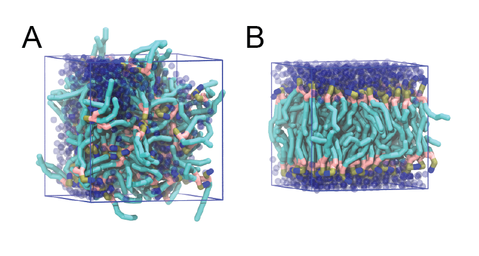
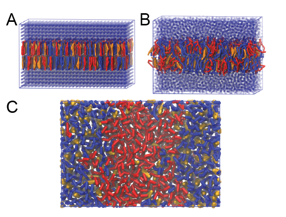

Lipids with the lipidome
The material offered in this page is LEGACY material. This means that it either pertains to older iterations of the Martini force field and/or that it is no longer actively supported. However, this does not mean that there aren’t cool things to be learned here! Have a look! If you are looking for the current iterations of the Martini force field lectures or hands-on tutorials, click here to go back!
Bilayer self-assembly
The Martini coarse-grained (CG) model was originally developed for lipids[1,2]. The underlying philosophy of Martini is to build an extendable CG model based on simple modular building blocks and to use only few parameters and standard interaction potentials to maximise applicability and transferability. Martini uses an approximate 4:1 atomistic (heavy atoms) to CG bead mapping and in version 2.0[2] 18 bead types were defined to represent chemical characteristics of the beads. The CG beads have a fixed size and interact using an interaction map with 10 different interaction strengths. Due to the modularity of Martini, a large set of different lipid types has been parameterized. Their parameters are available in the Martini Lipidome, see the Martini lipid topology section. In this tutorial, you will learn how to set up lipid-water system simulations with the lipidome, with a focus on bilayers. You will also study a number of standard bilayer properties.
The aim of the tutorial is to create and study properties of CG Martini models of lipid bilayer membranes. First, we will attempt to spontaneously self-assemble a DPPC bilayer and check various properties that characterize lipid bilayers, such as the area per lipid, bilayer thickness, order parameters, and diffusion. Next, we will change the nature of the lipid head groups and tails, and study how that influences the properties. Finally, we will move on to creating more complex multicomponent bilayers.
You can download all the files, including worked examples of this tutorial (gromacs version 2016.3): bilayer-lipidome-tutorial-GMX5_2017Aug04-WORKED.tgz This is a rather large archive. A smaller set that expects you to do more yourself is recommended and is named: bilayer-lipidome-tutorial-GMX5_2017Aug04.tgz Unpack one of the lipidome-tutorial.tgz archives (NOTE: both expand to a directory called bilayer-lipidome-tutorial), and enter the bilayer-lipidome-tutorial directory:
$ tar -xzvf bilayer-lipidome-tutorial-GMX5_2017Aug04.tgz
$ cd bilayer-lipidome-tutorialLipid bilayers
We will begin with self-assembling a dipalmitoyl-phosphatidylcholine (DPPC) bilayer from a random configuration of lipids and water in the simulation box. Enter the spontaneous-assembly/initial_assembly subdirectory. The first step is to create a simulation box containing a random configuration of 128 DPPC lipids. This can be done by starting from a file containing a single DPPC molecule. (Note that you can download coordinate files for all Martini lipids from the website, see the Martini lipid topology section.) A file with coordinates for a single DPPC molecule is available for you as DPPC-em.gro. The gromacs tool insert-molecules can take this single-molecule conformation and attempt to place it in a simulation box multiple times at a random position and random orientation, each time checking that there are no overlaps between the consecutively placed molecules. For help on any gromacs tool, you can add the -h flag.
$ cd spontaneous-assembly/initial_assembly
$ gmx insert-molecules -ci DPPC-em.gro -box 7.5 7.5 7.5 -nmol 128 -radius 0.21 -try 500 -o 128_noW.gro The value of the flag -radius (default van der Waals radii) has to be increased from its default atomistic length (0.105 nm) to a value reflecting the size of Martini CG beads, and noW stands for no Water. Perform a short energy minimization of the system containing only the lipids; the only reason for doing this, is getting rid of high forces between beads that may have been placed quite close to each other. The settings file minimization.mdp is provided for you, but you will need the topology for the DPPC lipid. Download it from the Martini lipidome page, see the Martini lipid topology section, place it in your current working directory, and check that the file name corresponds to the #include statement in the topology file dppc.top. You will also need a file with the particle definitions, in this case for version 2.1, which can be downloaded from the the Martini particle definition subsection of the Martini forcefield parameter section.
# [gedit/vi] dppc.top
$ gmx grompp -f minimization.mdp -c 128_noW.gro -p dppc.top -o dppc-min-init.tpr
$ gmx mdrun -deffnm dppc-min-init -v -c 128_minimized.groUsing the gromacs tool solvate, add 6 CG waters per lipid (note that this corresponds to 24 all-atom waters per lipid).
$ gmx solvate -cp 128_minimized.gro -cs water.gro -o waterbox.gro -maxsol 768 -radius 0.21Also here, the value of the flag -radius is used to reflect the size of Martini CG beads. The water beads are taken from the file water.gro provided for you. A new file, waterbox.gro is produced containing the 128 lipids and added water beads.
Now perform an energy minimization again. You will need to adapt dppc.top to reflect the water (W) beads added to the system. Look at the output of gmx solvate to see how many W beads were added; the maximum number is 768 (specified on the last command as the -maxsol option). Remember that in gromacs files a semicolon (;) preceeds a comment line and is not interpreted as input!
# [gedit/vi/other editor] dppc.top
$ gmx grompp -f minimization.mdp -c waterbox.gro -p dppc.top -o dppc-min-solvent.tpr
$ gmx mdrun -deffnm dppc-min-solvent -v -c minimized.groNow, you are ready to run the self-assembly MD simulation. About 30 ns should suffice.
$ gmx grompp -f martini_md.mdp -c minimized.gro -p dppc.top -o dppc-md.tpr
$ gmx mdrun -deffnm dppc-md -vThis might take approximately 45 minutes on a single CPU but by default gmx mdrun will use all available CPUs on your machine. The -v option shows an estimate of the time to completion, and it is interesting to observe how the generations of desktop computers have speeded up this 30 ns simulation over the years. You can tune the numbers of parallel threads gmx mdrun uses with the -nt parameter. You may want to check the progress of the simulation to see whether the bilayer has already formed before the end of the simulation. You may do this most easily by starting the inbuilt gromacs viewer (you will need to open a new terminal and make sure you are in the directory where this simulation is running):
$ gmx view -f dppc-md.xtc -s dppc-md.tpror, alternatively, use VMD or pymol. Both VMD and pymol suffer from the fact that Martini bonds are usually not drawn because they are much longer than standard bonds and the default visualization is not very informative. For visualization with pymol this is solved most easily by converting the trajectory to .pdb format, explicitly writing out all bonds (select System or DPPC, depending on whether you want to visualize the entire system or only the lipids). The disadvantage is that very large files are produced in this conversion!
$ gmx trjconv -s dppc-md.tpr -f dppc-md.xtc -o dppc-md.pdb -pbc whole -conect
$ pymol dppc-md.pdbFor VMD, a plugin script cg_bonds.tcl was written that takes the Gromacs topology file and adds the Martini bonds defined in the topology. (This file is included in the directory for your convenience, but you would normally want to store this in a generally useful location and refer to it when needed.) In general, a useful preprocessing step for VMD visualization is to avoid molecules being split over the periodic boundary, because if they are, very long bonds will be drawn between them. A script do_vmd.sh has been prepared for you for visualization using VMD. To learn more about visualizing Martini systems using VMD, consult the VMD tutorial. You will probably need to make the script executable.
$ chmod +x do_vmd.sh
$ ./do_vmd.shThe inital and final snapshots should look similar to Fig. 1, at least if the self assembly resulted in a bilayer in the alloted time, which is not guaranteed. You may have noticed, however, that there is relatively little water, and some part of the initial solvated box is actually devoid of water. This helps to more or less guarantee a bilayer, but does make the simulation a little less realistic. You can test by solvating the lipids with more solvent. You can do this by changing the -maxsol flag on the gmx solvate command.
In the meantime, have a close look at the Martini parameter files. The available bead types and their interactions are defined in the file martini_v2.1.itp. This file contains the definitions of version 2.1, and also includes the definition of the water bead, right at the bottom of the file. The lipid DPPC is defined in the file martini_v2.0_DPPC_01.itp, which you downloaded from the lipidome page. Get out the 2007 Martini paper[2] and check the definition of this molecule. Understanding how these files work, will help you work with the Martini model and define new molecules or refine existing models.

When the simulation has finished, check whether you got a bilayer. If yes, check if the formed membrane is normal to the z-axis (i.e., that the membrane is situated in the xy-plane). Have a look at the self-assembly process: can you recognize intermediate states, such as micelles, and do you see metastable structures such as a water pore (water spanning the membrane interior) and/or a lipid bridge (lipid tail(s) spanning the water layer)?
Bilayer equilibrium run and analysis
If your bilayer was formed in a plane other than the xy-plane, rotate the system so that it will (with gmx editconf). In case you did not get a bilayer at all, you can continue the tutorial with the pre-formed one from dspc-bilayer.gro. (Example files of the tutorial assume that this file is used.) From this point on, we will refer to the bilayer as a DSPC bilayer. In Martini, the 4-to-1 mapping limits the resolution and the same model represents in this case a C-16 tail (palmitoyl) and a C-18 tail (stearoyl, hence DSPC). The reason for referring to the lipid as DSPC is that later on, we will compare the simulated properties to experiment and we will compare different lipids all with the same number of beads, changing either the head group from PC to PE or changing the tail from stearoyl (C-18, fully saturated) to oleoyl (C-18, single cis double bond at C-9).
The spontaneous assembly simulation was done using isotropic pressure coupling. The bilayer may have formed but is probably under tension because of the isotropic pressure coupling. Therefore, we first need to run a simulation in which the area of the bilayer can reach a proper equilibrium value. This requires that we use independent pressure coupling in the plane and perpendicular to the plane. Set up a simulation for another 30 ns at zero surface tension (switch to semiisotropic pressure coupling; if the pressure is the same in the plane and perpendicular to the plane, the bilayer will be at zero surface tension) at a higher temperature of 341 K. This is above the experimental gel to liquid-crystalline transition temperature of DSPC. You will find how to change pressure coupling and temperature in the gromacs manual: manual.gromacs.org/current/online/mdp_opt.html, or online manual 2016. It is highly recommended that you make perform this simulation in a new directory, name it, for example dspc-eq. Copy the required files there, edit the .mdp file, and set the run going (the commands for this final step - involving gmx grompp and gmx mdrun - are not given explicitly).
$ mkdir dspc-eq
$ cp dppc-md.gro (or dspc-bilayer.gro) dspc-eq/.
$ cp martini_md.mdp dspc-eq/.
$ cp martini*.itp dspc-eq/.
$ cp dppc.top dspc-eq/.
$ cd dspc-eq
# [gedit/vi] martini_md.mdpThen prepare a .tpr file (gmx grompp etc) and run the simulation (gmx mdrun etc; i.e. similar instructions as for the spontaneous assembly run explained above; you may need to ignore a warning about non-matching atom names, and possibly adapt the number of water beads). If you do not want to wait for this simulation to finish, skip ahead and use a trajectory provided in the subdirectory spontaneous-assembly/equilibration/. NOTE!! The commands below assume your poduction run is producing files with the prefix md. This need not be the case, so replace these entries with the appropriate name(s) for your simulations.
From the latter simulation, we can calculate properties such as:
- area per lipid
- bilayer thickness
- P2 order parameters of the bonds
- lateral diffusion of the lipids
In general, for the analysis, you might want to discard the first few ns of your simulation as equilibration time. The area per lipid as a function of time should give you an indication of which part of the simulation you should definitely not include in the analysis.
Area per lipid
To get the (projected) area per lipid, you can simply divide the area of your simulation box by half the number of lipids in your system. The box-sizes can be obtained by running the gromacs tool gmx energy (ask for Box-X and Box-Y, remember that gmx 'tool' -h brings up the help of any gromacs tool). Then either use awk or xmgrace to calculate the area per lipid as a function of time. The gromacs tool analyze provides a convenient way to calculate the average and error estimate in any series of measurements (use the option -ee for the error estimate, and make sure you feed gmx analyze a file with a .xvg extension). (Note that this calculation might not be strictly OK, because the self-assembled bilayer might be slightly asymmetric in terms of number of lipids per monolayer, i.e., the areas per lipid are different for the two monolayers. However, to a first approximation, we will ignore this here.)
$ gmx energy -f md.edr -o box-xy.xvg
> 10 11 0 #[press Enter]Here, the second line is meant to show that you need to type the number(s) of the propery/ies you want. In our version this is 10 for Box-X and 11 for Box-Y. After typing “Enter” the output file is produced. You can now open it in xmgrace. You need to multiply the values of x and y at each time, and divide by 64 (number of lipids per monolayer or leaflet). To do this within xmgrace, click on the Data tab, then the Transformations tab, and then the Evaluate expression… tab. Select one of the sets on the left-hand side, for example G0.S0. Now click in the big Formula window. In that window type:
y=s0.y*s1.y/64and press the Apply button in the left-hand-side corner. You will see that a third set has appeared. It contains the area per lipid. You do not see it in the graph, because it falls outside the range of the plot. To view it, click on the AS button in the left menu. This changes the range of plotting so all graphs in the file are shown. You will see a line at much lower values. To get a proper view of that, first click on the AutoO button and then on the line. It should show the range for that line. This can give you an idea of the relaxation time of the system: where do you see drift and where do you see fluctuations around an average. Note the time that you think is relaxation. Save the file under the name area.xvg in the File menu, and Exit xmgrace. Next, get the averages and error estimates using the gromacs tool analyze. Note the flag -n 3; there are three sets of data in the file. You can discard the relaxation time by using the flag -b [number].
$ xmgrace -nxy box-xy.xvg # [perform operations and save as area.xvg]
$ gmx analyze -n 3 -f area.xvg -ee
$ gmx analyze -n 3 -f area.xvg -ee -b 15000As an alternative, calculate only the x dimension (x and y start the same and they are coupled together, and so remain the same), and use awk to calculate the area per lipid. Then look at the statistics.
$ gmx energy -f md.edr -o box-x.xvg -xvg no
$ awk '{if (substr($1,1,1) != "#" && substr($1,1,1) != "@") print $1, $2*$2/64}' < box-x.xvg > area-per-lipid.xvg
$ gmx analyze -f area-per-lipid.xvg -ee -b 15000Bilayer thickness
To get the bilayer thickness, use gmx density. You can get the density for a number of different functional groups in the lipid (e.g., phosphate and ammonium headgroup beads, carbon tail beads, etc) by feeding an appropriate index-file to gmx density (make one with gmx make_ndx; you can select, e.g., the phosphate beads by typing a P*; type q to exit , this leaves you with an index file named index.ndx). You can obtain an estimate of the bilayer thickness from the distance between the headgroup peaks in the density profile.
$ gmx make_ndx -f md.gro
> a P*
> q$ gmx density -f md.xtc -s md.tpr -b 15000 -n index.ndx -o p-density.xvg -xvg no
> 4$ xmgrace p-density.xvg A more appropriate way to compare to experiment is to calculate the electron density profile. The gmx density tool also provides this option. However, you need to supply the program with a data-file containing the number of electrons associated with each bead (option -ei electrons.dat). The format is described in the gromacs manual and not part of this tutorial.
Compare your results to those from small-angle neutron scattering experiments[3]:
- thickness = 4.98 ± 0.15 nm
- area per lipid = 0.65 ± 0.05 nm2
Lateral diffusion
Before calculating the lateral diffusion, remove jumps over the box boundaries (gmx trjconv -pbc nojump). Then, calculate the lateral diffusion using gmx msd. Take care to remove the overall center of mass motion (-rmcomm), and to fit the line only to the linear regime of the mean-square-displacement curve (-beginfit and -endfit options of gmx msd). To get the lateral diffusion, choose the -lateral z option.
$ gmx trjconv -f md.xtc -s md.tpr -pbc nojump -o nojump.xtc
$ gmx msd -f nojump.xtc -s md.tpr -rmcomm -lateral z -b 15000
$ xmgrace msd.xvgTo compare the diffusion coefficient obtained from a Martini simulation to a measured one, a conversion factor of about 4 has to be applied to account for the faster diffusion at the CG level due to the smoothened free energy landscape (note, the conversion factor can vary significantly depending on the molecule in question). Also note that the tool averages over all lipids to produce the msd curve. It is probably much better to analyze the motion of each lipid individually and remove center-of-mass motion per leaflet. This requires some scripting on your part and is not included in this tutorial.
Order parameters
Now, we will calculate the (second-rank) order parameter, which is defined as:
\[ P_2 = 1/2 (3 cos^2 \langle \sigma \rangle − 1) \]
where \(\sigma\) is the angle between the bond and the bilayer normal. \(P_2 = 1\) means perfect alignment with the bilayer normal, \(P_2 = −0.5\) anti-alignment, and \(P_2 = 0\) random orientation.
A script to calculated these order parameters can be downloaded here (scroll down to the section on do_order, and download the script do-order-gmx5.py. there is also a version located in the directory scripts/). Copy the .xtc and .tpr files to a analysis subdirectory (the script expects them to be named traj.xtc and topol.tpr, respectively; you may want to use the 30 ns simulations already present in the subdirectory spontaneous-assembly/equilibration/). The script do-order-gmx5.py will calculate \(P_2\) for you. As it explains when you invoke it, it needs a number of arguments. You may need to or want to change some of the arguments. The command:
$ python do-order-gmx5.py md.xtc md.tpr 15000 30000 20 0 0 1 128 DPPCwill for example read 15 to 30 ns from the trajectory md.xtc. The simulation has 128 DPPC lipids and the output is the \(P_2\), calculated relative to the Z-axis, and average over results from every 20th equally-spaced snapshot in the trajectory. Results are available as output and in the files order.dat and S-profile.dat; the latter is a profile that can be compared to published profiles, e.g. in Ref.[1]. (Remember, DSPC and DPPC share the same Martini representation!)
Advanced: additional analysis
Different scientific questions require different methods of analysis and no set of tools can span them all. There are various tools available in the gromacs package, see the gromacs manual: manual.gromacs.org/current/online.html. Most simulation groups, therefore, develop sets of customized scripts and programs many of which they make freely available, such as the Morphological Image Analysis and the 3D pressure field tools available here. Additionally a number of packages are available to for assistance with analysis and the development of customized tools, such as the python MDAnalysis package: installation instructions.
Changing lipid type
Lipids can be thought of as modular molecules. In this section, we investigate the effect of changes in the lipid tails and in the headgroups on the properties of lipid bilayers using the Martini model. We will i) introduce a double bond in the lipid tails, and ii) change the lipid headgroups from phosphatidylcholine (PC) to phosphatidylethanolamine (PE).
Unsaturated tails
To introduce a double bond in the tail, we will replace the DSPC lipids by DOPC. Set up a directory for the DOPC system. Enter that directory. Download the topology for DOPC from the Martini lipidome web page. Compare the Martini topologies of these two lipids. You will see that the number of beads for these lipids is the same. You can therefore set up a DOPC bilayer quite simply from your DSPC result. Copy over the .top and .mdp file from the equilibration DSPC run. Copy the final frame of the DSPC run to serve as the starting frame of the DOPC run. Replace DPPC by DOPC in your .top and .mdp files, and gmx grompp will do the rest for you (you can ignore the ”atom name does not match” warnings of grompp); you do this by adding the -maxwarn option to the gmx grompp command, e.g. 3 allows a maximum of 3 warnings and will still produce a .tpr file). Execute the simulation, or - if you are impatient - use the trajectory provided for you as spontaneous-assembly/equilibration/dopc/dopc-ext.xtc. NOTE: because the lipids DSPC and DOPC have exactly the same number of beads, you can use the .tpr file from DSPC to analyze the dopc-ext.xtc file.
Changing the headgroups
Similarly, starting again from the final snapshot of the DSPC simulation, you can easily change the head groups from PC to PE. Download the topology for DPPE from the Martini lipidome web page. Also for this system, run a 30 ns MD simulation, or - if you are impatient - use the trajectory provided for you as spontaneous-assembly/equilibration/dspe/dspe-ext.xtc. NOTE: because the lipids DSPC and DOPC have exactly the same number of beads, you can use the .tpr file from DSPC to analyze the dopc-ext.xtc file.
Compare the above properties (area per lipid, thickness, order parameter, diffusion) between the three bilayers (DSPC, DOPC, DSPE). Do the observed changes match your expectations? Why/why not? Discuss.
Complex bilayer mixtures
When setting up larger and more complex bilayers it can be more convenient, or necessary, to start with a bilayer close to equilibrium rather then trying to get the bilayer to self-assemble. This can be done by concatenating (e.g. using gmx editconf) and/or altering previously formed bilayers or by using a bilayer formation program such as insane.py, available in the directory scripts/ or downloadable here (scroll down to the section on Insane). INSANE (INSert membrANE) is a CG building tool that generates membranes by distributing lipids over a grid. Lipid structures are derived from simple template definitions that can either be added to the program or provided on-the-fly from combinations of headgroup, linker and lipid tails specified on the command-line. The program uses two grids, one for the inner and one for the outer leaflet, and distributes the lipids randomly over the grid cells with numbers according to the relative quantities specified. This allows for building asymmetric bilayers with specific lipid compositions. The program also allows for adding solvent and ions, using a similar grid protocol it distributes them over a 3D grid. Additional information about the functionality of INSANE can be found by running insane.py -h.
In the directory complex-bilayers/ we will create a fully hydrated 4:3:3 mole ratio bilayer of DPPC:DIPC:CHOL with physiological ion concentration using insane.py, this is a similar mixture as was used in Risselada and Marrink[4] to show raft formation. The lipid DIPC is representative for tails containing two cis-unsaturated bonds and of length 16-18 carbons. Start by running INSANE (downloaded or copied from the scripts/ directory):
$ python insane.py -l DPPC:4 -l DIPC:3 -l CHOL:3 -salt 0.15 -x 15 -y 10 -z 9 -d 0 -pbc cubic -sol W -o dppc-dipc-chol-insane.groThis will generate an initial configuration for the system dppc-dipc-chol-insane.gro (Fig. 2A). Download the relevant lipid topologies from the Martin lipdome and provide this information together with the system composition to the .top file. (Check that the file provided for you is correct.)
Then, energy minimize the structure and gently equilibrate the system. Note, as this simulation contains multiple components you will have to make an index file (using gmx make_ndx) and group all the lipids together and all the solvent together to fit the specified groups in the .mdp files; the .mdp files provided expect the names Lipids and Solvent. As all the bilayer lipids and solvent were placed on a grid (Fig. 2A), even after minimization they can still be in an energetically unfavorable state. Due to the large forces involved it may be necessary to run a few equilibrium simulations using a short time step (1-10 fs) before running production simulations with Martini lipid time steps (30-40 fs). The initial grid order imposed by insane.py should relax in a few ns (Fig. 2B), we recommend simulating for 5-30 ns using the Berendsen pressure coupling algorithm, to relax the membrane area, before switching to Parrinello-Rahman for the production run. This mixture will phase separate at a temperature of 295 K but that can take multiple microseconds (Fig. 2C). A sample run is provided for you in the directory bilayer-lipidome-tutorial/complex-bilayers/raftmix.xtc. The INSANE script can also be used to set up a complex (or simple!) bilayer system including membrane protein, see the Martini protein tutorial.

Advanced: refine lipid parameters
This section uses the backward.py tool for fine-grained-to-coarse-grained (FG-to-CG) transformation, which is treated in more detail elsewhere. A related, but different strategy not using the backward.py tool is used in the tutorial on polymers, advantageous there because the PEG molecule is simpler to map from FG to CG representation than lipids.
In this part, we will outline how atomistic simulations can be used to obtain improved Martini parameters for selected degrees of freedom. You may then take this strategy to whatever lengths you deem fit. Remember, Martini in general does not aim to be specific for one particular molecule, but recognizes that the four-to-one mapping results in Martini molecules being representative of several closely related molecules. However, you may want to develop a specific model or compare how well Martini covers closely related molecules.
Here, we study diC18:2-PC, a PC lipid with a doubly unsaturated tail, in the Martini lipidome denoted as DIPC. Specifically, the atomistic (FG) model is for dilineoylphosphatidylcholine. The lineoyl tail is fully denoted as C18:2c9,12. This notation shows that the tail is 18 carbons long (counting starts at the ester C-atom, bound to the two O-atoms), contains two cis bonds, starting at carbon 9 and carbon 12, respectively (i.e. the cis-bonds are between carbons 9-10 and 12-13). We will show how to compare distributions of selected angles between beads for a mapped FG model to those from a Martini simulation. You can then use the distributions to guess and refine selected Martini parameters such that the distributions match those from the FG simulation as close as possible. The files needed in this section are located in the bilayer-lipidome-tutorial/refine/ directory. The FG trajectory is in fg.xtc. This contains only the lipids from a simulation of a lipid bilayer consisting of 128 lipids (64 per monolayer) in water.
The task can be divided into the following five steps:
- Transform the all-atom (fine-grained, FG) trajectory into its coarse-grained counterpart, based on a pre-defined mapping scheme.
- Calculate selected angle distributions. These will serve as the reference (“gold standard”) later.
- Do a coarse-grained simulation of the system.
- Calculate the selected angle distibutions, and compare to the reference.
- Revise coarse-grained parameters, repeat steps 3 and 4 until you are satisfied with the result.
For the transformation from FG to CG, we will use the tool backward.py, which is described in more detail elsewhere. You do not need to download this tool; it is provided in the refine/ directory. Note that this and other python scripts are under continued development and updated versions are published. If you want to compare your work to the files provided, use the version provided. You are nevertheless encouraged to use the latest version.
The refine/Mapping directory contains a file dipc.gromos.map that defines the mapping from the FG to the CG model. Have a look at it. You will see how each (united) atom of the FG lipid contributes to a CG bead. The order of the CG beads in the CG model is provided under the [ martini ] directive. Beads will appear in the output file in this order. It is important that this order corresponds to your proposed Martini model. Check the correspondence by inspecting the file refine/take0/martini_v2.0_DIPC.itp. This contains the proposed Martini model. If you wish to alter the mapping scheme, you can do so by assigning the atoms differently to the beads. In general, we aim to adapt the mapping such that we get predominantly unimodal distributions for bonds and angles; however, we also want to stay within the Martini scheme of 4-to-1 mapping and mapping to recognizable chemical groups. As long as you can rationalize your choices, Martini is quite flexible.
1. Transformation of the FG trajectory to a mapped CG trajectory
Backward.py can perform the mapping from the FG to the CG model for .pdb and .gro files, but not (yet) for entire trajectories. Thus, the FG trajectory is first written out in single frames, and each frame is mapped from FG to CG using backward.py. When all CG frames are done, they are concatenated into a single CG trajectory - the time stamp is lost in this process! The mapping procedure is done for you in the bash script do-mapping.sh. Please inspect it before you execute it. Before you do the mapping, you need to have a .tpr file for the FG system.
$ gmx grompp -p system.top -c lipid.gro -f min.mdp -o fg.tpr -maxwarn 10
$ ./do-mapping.sh This will probably take a while, you can read on and also start on point 3. while the conversion is in progress. When it is done, you will see that two directories have been created: FRAMES contains all the FG frames dumped from the trajectory; CGFRAMES contains all the CG frames converted from the FG frames and the mapped trajectory (CGFRAMES/cg-mapped.xtc).
2. Calculation of the selected angle distributions
Angle distributions can be calculated using the gromacs tool gmx angle. This requires an index file containing multiples of three indices. The three indices are the atoms/beads that define an angle. In this case, you have 128 lipids that each contain one or more angles you are interested in. You want to pool the data from equivalent angles and collected over the entire trajectory. This is best done by calculating the angle of interest for each lipid as a function of time, collect all equivalent angle data in one file and generate a distribution from that data. The bash script angledistr.sh does that for you. However, before you start, you need to provide a list of angles you are interested in. The script expects a file called anglelist containing one or more lines consisting of three numbers. The numbers are the indices of the angle(s) of interest. The numbers refer to a single lipid. The script will convert these for each lipid individually, depending on the number of lipids and the number of beads of each lipid. You may need to change these variables (NMOL and NAT, respectively) in the script. You can also adapt the script to take data from only a subset of the lipids, for example to calculate error bars on your distributions. Now, start the script or take a look at the files first and then start the script. Again, this may take a while, but you can already work on step 3.
# [ gedit/vi ] anglelist
# [ gedit/vi ] angledistr.sh
$ ./angledistr.sh You will see that a new directory has been created: ANGLES contains all data of all the angles of all the lipids as a function of time (cga_n.m.xvg), numbering the angles (n) and lipids (m) from 0 onward. Angle 0 corresponds to the first angle in the file anglelist. The distribution of the pooled data for each angle in the file anglelist can be found in the file ANGLES/cga_n-distr.xvg, where n is a number. You may inspect these files using a plot program, e.g. xmgrace. If all is well, the four angle distributions should look like those given in the files cfMappedAngleDistributions.agr, and cfMappedAngleDistributions.png.
These are the target distributions that we want to obtain with the CG model.
3. CG simulation and initial guess for angle bending parameters
As a starting point, go to the directory refine/take0. We will use the Martini parameters as defined in martini_v2.0_DIPC.itp, i.e., the angles for the angles around the double-bond beads are defined with the minimum energy at 120 degrees. Carry out a short CG simulation (starting from cg_mdstart.gro).
$ gmx grompp -p cg.top -c cg_mdstart.gro -n run.ndx -f martini_md.mdp -o cg.tpr
$ gmx mdrun -v -deffnm cg Alternatively, you may want an educated guess based on the distributions before you start out on take0. Of course, this requires that you have one or more target distributions (from step 2). There is a tool to help you. Go back to the directory refine. The python script do_fit.py fits harmonic or periodic potentials to target distributions and returns parameters for the reference length or angle and force constant. NOTE: you will need to have the python package symfit installed! As an example, try the first angle:
$ python do_fit.py -f ANGLES/cga_0-distr.xvg -x0 100 -k 25 --harmonic --radiansYou should see a window appear (be patient, it may take a while) with the target distribution in blue and the first guess gaussian distribution in red. On the bottom of the window are sliders; you can adjust them to give a better fit. The parameter values will serve as the starting values of a best fit. Closing this window triggers the fitting procedure to start, and will result in the program determining best fit parameters and a new window showing the fit. The best fir parameters are printed in the terminal window. If you remember to specify the --radians flag on the command line, the force constant should have the correct Gromacs units.
4. Calculate CG distributions and 5. iterate
By now, this is now easy! All you need is the same input (anglelist) and script (angledistr.sh) as for the mapped trajectory, except to change the name of the CG trajectory (to cg.xtc). Copy them over, edit, and analyze. After comparing the angle distributions of interest, adjust the relevant parameters in the CG .itp file and run a new simulation. It is probably a good idea to do every simulation in a new directory. Comparing distributions can be done using xmgrace, for example in directory refine/take0 after analysis:
$ xmgrace ANGLES/cga_0-distr.xvg ../ANGLES/cga_0-distr.xvgA python tool that gives you a graphical comparison and quantitative comparison is also available (the data in the first file are rendered as blue points, the data in the second file as a red line):
$ python compare.py ANGLES/cga_0-distr.xvg ../ANGLES/cga_0-distr.xvgTools and scripts used in this tutorial
gromacs(http://www.gromacs.org/)insane.py(downloadable here)backward.py(downloadable here)MDAnalysispackage (MDAnalysis)
References and notes
[1] Marrink, S. J., De Vries, A. H., and Mark, A. E. (2004) Coarse grained model for semiquantitative lipid simulations. J. Phys. Chem. B 108, 750–760.
[2] Marrink, S. J., Risselada, H. J., Yefimov, S., Tieleman, D. P., and De Vries, A. H. (2007) The MARTINI force field: coarse grained model for biomolecular simulations. J. Phys. Chem. B 111, 7812–7824.
[3] Balgavy, P., Dubnicková, M., Kucerka, N., Kiselev, M. A., Yaradaikin, S. P., and Uhrikova, D. (2001) Bilayer thickness and lipid interface area in unilamellar extruded 1,2-diacylphosphatidylcholine liposomes: a small-angle neutron scattering study. Biochim. Biophys. Acta 1512, 40–52.
[4] Risselada, H. J., and Marrink, S. J. (2008) The molecular face of lipid rafts in model membranes. Proc. Natl. Acad. Sci. U.S.A. 105, 17367